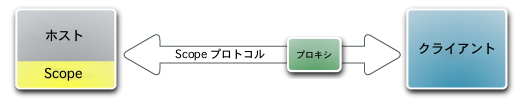
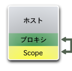
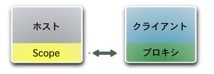
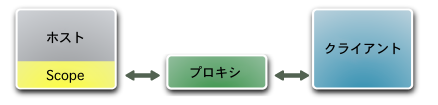
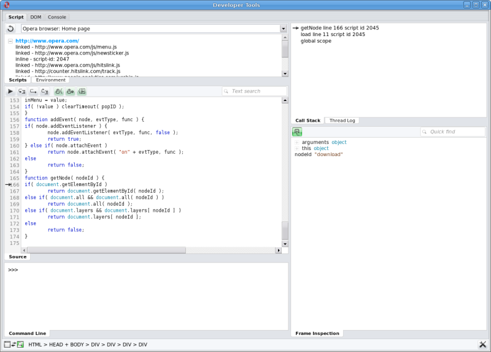

Opera Dragonfly の基本設計
はじめに
この文書では Opera Dragonfly の基本設計について、個々の構成要素の挙動を見ながら詳しく説明していきます。
基本設計の概観
Opera Software の開発ツールである Opera Dragonfly は、デスクトップコンピューターと並び携帯電話などのいろいろな端末でデバッグができるように設計されています。
Scope モジュールはランタイム（デバッグの行われている、Opera インスタンス内のウェブページとアプリケーション）に関する情報を見えるようにしてくれるものです。この Opera インスタンスはデバッグのホストとして動き、この情報はデバッグのクライアントに供給されます。通信されるデータの形式は Scope プロトコルによって定義されています。
ファイアーウォールによる問題の可能性を防ぐために、プロキシがブラウザとデバッグの間を取り持ちます。ひとつの例としては、携帯電話用のアプリケーションやウェブページを通常のデスクトップコンピュータからデバッグする場合です。
デバッグ用アプリケーションであるクライアントは、情報を可視化させて、ユーザーがランタイムを操作できるようにします。
ホストとクライアントは別々の機器で動いていてもよく、プロキシがどちらかの機器の中や別のサーバーで動いていることがあります。

デバッグのシナリオ
デバッグには二つの基本的な方法があります。
- 統合: Scope 、プロキシ、デバッガが同じ Opera インスタンス内で動いている場合。
- リモート: Scope とデバッガが別々の Opera インスタンス（例えば 別々の機器上）で動き、プロキシがもしあれば、そのどちらかの機器かあるいはまた別のコンピューター上で動いている場合。
統合
典型的なシナリオは次のとおりです。開発者はウェブアプリケーションを普通の Opera ブラウザで操作していて、デバッガは同じ Opera インスタンス内の別のページ（タブ）やパネルで開いています。

この場合、デバッグのホストとプロキシとクライアントはすべて同じ Opera インスタンス内で走ります。プロキシは Opera によって無作為に選ばれたポートで動作し、Scope モジュールとデバッガに自動接続します。
リモート
このシナリオの例は、携帯電話用のウェブページやアプリケーションをデバッグする場合です。携帯電話は画面が小さく開発には向いていないときがあるので、代わりにデスクトップコンピュータをデバッグに使います。
もう一つの例は、ある機器上のひとつの Opera インスタンスを、同じ機器で動いているもうひとつの Opera インスタンスからデバッグする場合です。この方法は、デバッグのホストのクラッシュを伴う恐れのあるときに便利です。
リモートデバッグはさらに二つの主なシナリオに分けられます。
- プロキシがどちらかのインスタンスの中で動いている場合。
- プロキシが両方のインスタンスの外で動いている場合（例えばパブリックサーバー内）。

二つ目のシナリオはデバッグの行われている Opera インスタンスとデバッガが両方ともファイアーウォールの内側で動いているときに使われます。

構成要素
Opera Dragonfly の基本設計は以下の構成要素から成り立っています。
ランタイム
ECMAScript 環境ひとつひとつがランタイムです。各 HTML ドキュメントには一つのランタイムが付随します。フレームとインラインフレーム内のドキュメントはまたそれぞれのランタイムを持っています。
デバッグ・ホスト
Scope モジュールが有効であり、プロキシに接続されている Opera イン スタンスはどれもデバッグ・ホストとなります。これは複数のランタイムを含むことができます。
Scope モジュール
Scope モジュールは Opera アプリケーションの一部です。これが有効になると、Scope モジュールはプロキシ URLへの接続を確立し、デバッグ・ホストのランタイムをすべて調べます。その後 Scope モジュールは情報をデバッガに送ります。また、Scope モジュールは、選択したノードに対する DOM をダウンロードするといった、デバッガからの特定の命令に反応したりもします。
Scope プロトコル
Scope プロトコルはホストとクライアントがランタイムについての情報をやりとりするための形式やルールです。例えば、ランタイムから DOM ドキュメント構造や計算の初期値を取得します。
Scope プロトコルはまだ開発段階にあり、完了と同時に公開される予定です。ソフトウェアメーカーはそれを元にデバッグクライアントを作成したり、IDEなどのアプリケーションに組み込むことができます。こういったクライアントは、Scope プロトコルを使って Opera ブラウザのランタイムについての情報を得ることができます。
プロキシ
プロキシはブラウザとデバッガの間のメッセージを通す役割を果たします。これはホストとクライアントが同一コンピューター上にないリモートデバッグのシナリオでは特に重要です。
Opera はデバッガの動いている Opera インスタンス内でプロキシを提供しますが、プロキシはパブリックサーバで動いていてもかまいません。このため、デバッグの行われている Opera インスタンスとデバッガの両方ともファイアーウォールの内側にいてもかまいません。
デバッグクライアント
デバッガとはプロキシを通してデバッグのホストの Scope モジュールに接続するクライアントのことです。これは Opera インスタンスのランタイムの状況情報を受け取ります。デバッガはランタイムを可視化し、ユーザーが修正できるようにします。これは Scope プロトコルを使って Scope モジュールに要求を送り返すことで行われます。
現在のデバッガの実装は完全にウェブ技術（HTML/XML、CSS、JavaScript）を用いて作成されています。


This article is licensed under a Creative Commons Attribution, Non Commercial - Share Alike 2.5 license.
Comments
The forum archive of this article is still available on My Opera.
No new comments accepted.